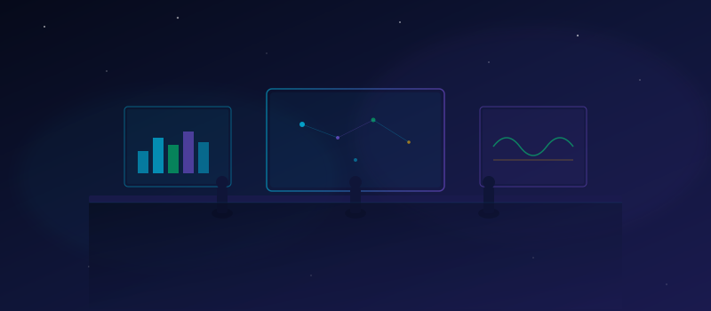

Prerequisites & Mission Briefing
Welcome aboard, Engineer. You've just been recruited by the Zenith Orbital Space Agency. Your predecessor left suddenly — something about "too many Excel files." The CTO has one directive: migrate everything to Microsoft Fabric.

🚀 Your Mission Begins
Zenith Orbital Space Agency (ZOSA) is an international organization founded in 2020, headquartered in Geneva. They process terabytes of telescope data, sensor telemetry, and partner intelligence daily. The legacy stack is crumbling — and you're the engineer they've hired to fix it.
Over the next 13 modules (~8 hours total), you'll go from an empty Fabric tenant to a fully operational, AI-powered analytics platform for ZOSA. Each module builds on the last — and tells a story.
🗺️ The Journey Ahead
Here's the full mission plan. Each module maps to a core Microsoft Fabric capability:
| Module | Title | What You'll Do |
|---|---|---|
00 | Prerequisites | ← You are here |
01 | Capacity & Workspace Setup | Provision Fabric and configure workspaces |
02 | Governance & Security | Implement defense-in-depth with OneLake Security |
03 | Data Ingestion | Ingest NASA APIs with Dataflows Gen2 & Pipelines |
04 | Medallion Lakehouse | Build Bronze → Silver → Gold with PySpark |
05 | Semantic Model | Create Direct Lake model with DAX measures |
06 | Power BI Reports | Design Mission Control dashboard |
07 | Real-Time Intelligence | Stream telemetry with Eventhouse & KQL |
08 | Data Science & ML | Train asteroid risk classifiers with MLflow |
09 | Ontology & Knowledge Graph | Map domain knowledge in Fabric IQ |
10 | AI Agents | Build Data & Operations Agents |
11 | CI/CD & Deployment | Git integration & Deployment Pipelines |
12 | Monitoring & Optimization | Capacity metrics & graduation! |
✅ Prerequisites Checklist
You need access to a Fabric-enabled workspace. Two options:
Option A — Free 60-day trial (recommended for learners):
Sign up at Microsoft Fabric Trial. No credit card required.
Option B — Paid capacity:
F2 minimum, F64 recommended for the full experience (especially Real-Time and Data Science modules).
How to verify:
- Go to app.fabric.microsoft.com
- Click Settings (⚙️) → Admin portal or Account
- Confirm you see Fabric enabled
If your organization's admin has disabled Fabric, you'll need to request access or use a personal Microsoft account for the trial.
We use real NASA data to populate the ZOSA universe.
- Register at https://api.nasa.gov/ — it's free and instant
- You'll receive an API key via email
You can use DEMO_KEY for low-rate testing (30 req/hour). Or skip API calls entirely — pre-generated sample data is included in data/sample/.
Required for running data generation and transformation scripts.
python --version
# Expected: Python 3.10.x or higherpip install -r requirements.txtUse a virtual environment to keep things clean:
python -m venv .venv
source .venv/bin/activate # macOS/Linux
.venv\Scripts\activate # Windows
pip install -r requirements.txtRequired for Module 06 (Power BI Reports).
- Download from powerbi.microsoft.com/desktop
- Or install via the Microsoft Store (auto-updates)
Power BI Desktop is Windows-only. On macOS/Linux, use the Power BI Service in your browser for most tasks.
Required for Module 11 (CI/CD & Deployment).
git --version
# Expected: git version 2.x.xIf not installed: git-scm.com
Only needed for the ADLS Gen2 shortcut exercise in Module 03.
A free Azure account works fine. You can skip this and still complete 95% of the lab.
📦 Clone & Setup
git clone https://github.com/Diaz506/fabric-space-lab.git
cd fabric-space-lab
pip install -r requirements.txtPath A — Generate Fresh Data from NASA APIs
Recommended for the most realistic experience:
python data/fetch_nasa_apis.py --api-key YOUR_KEY
python data/generate_synthetic.pyThis fetches real asteroid, exoplanet, and solar event data, then generates synthetic telemetry and mission records.
Path B — Use Pre-generated Sample Data
Sample data is included in data/sample/. No additional steps needed — lab notebooks detect and use it automatically.
Either path gives you: 150 missions, 200 crew members, 4,000+ telemetry readings, plus real NASA asteroid, exoplanet, and solar weather data.
👥 Meet Your Team
Throughout these labs, you'll work with key ZOSA personnel. Each has a role to play in your Fabric journey:
🌍 Ground Stations Reference
ZOSA operates 12 ground stations worldwide. This data is used throughout the lab as reference/dimension data — especially for Row-Level Security demos.
| ID | Station Name | Region | Location |
|---|---|---|---|
GS-01 | Geneva Prime | Europe | Geneva, Switzerland |
GS-02 | Atacama Deep | South America | Atacama Desert, Chile |
GS-03 | Mauna Kea Summit | North America | Hawaii, USA |
GS-04 | Karoo Array | Africa | Karoo, South Africa |
GS-05 | Svalbard Arctic | Europe | Svalbard, Norway |
GS-06 | Tanegashima | Asia Pacific | Tanegashima, Japan |
GS-07 | Parkes South | Oceania | Parkes, Australia |
GS-08 | Goldstone | North America | California, USA |
GS-09 | Jodrell Bank | Europe | Cheshire, UK |
GS-10 | Tidbinbilla | Oceania | Canberra, Australia |
GS-11 | Usuda Deep Space | Asia Pacific | Nagano, Japan |
GS-12 | Cebreros | Europe | Cebreros, Spain |
Before moving on, verify you have:
- Fabric capacity enabled (trial or paid)
- NASA API key saved (or using sample data)
- Python 3.10+ with dependencies installed
- Repository cloned and ready
- Power BI Desktop installed (can defer to Module 06)
- Git installed (can defer to Module 11)